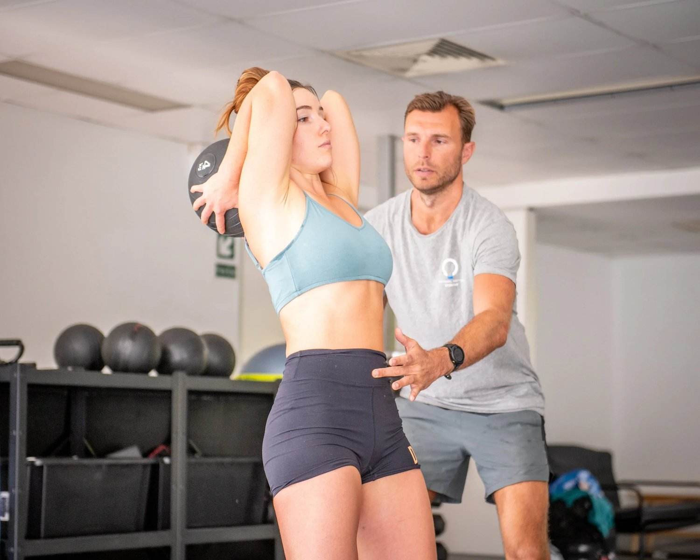
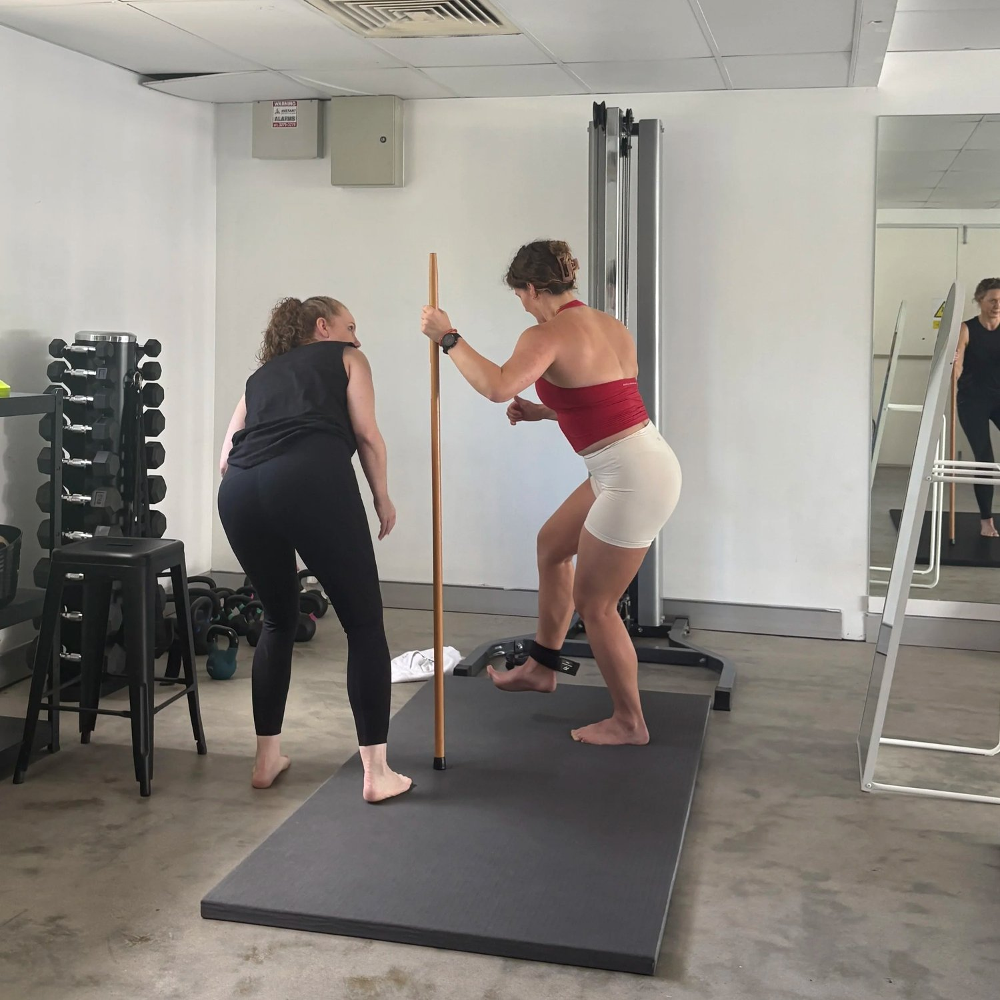
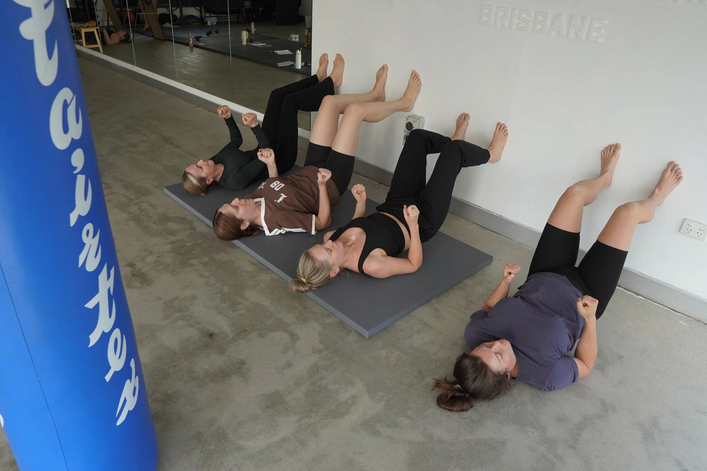

If you’ve been Googling:
-
how to relieve lower back pain
-
best stretches for lower back
-
lower back exercises
-
how to get rid of a sore back quickly
You’ve probably been told to stretch more.
Do cat-cow.
Do child’s pose.
Do crunches.
Strengthen your “core.”
And yet… your lower lumbar pain keeps coming back.
Here’s the uncomfortable truth:
Most lower back exercises make lower back pain worse.

Understanding Lower Back Pain (What’s Actually Happening)
Your lower back is not designed to create large movement.
It’s designed to transfer force.
When your hips don’t rotate properly…
When your pelvis lacks stability…
When your ribcage and thorax are rigid…
The lumbar spine compensates.
That’s when you feel tightness.
That’s when spasms start.
That’s when you search “how to stop lower back spasms.”
The pain isn’t random.
It’s mechanical overload.
10 Common Lower Back Exercise Mistakes
1. Stretching an Already Unstable Area
Most “back stretching exercises for lower back pain” increase motion in a joint that already lacks control.
More motion + less control = more irritation.

2. Repeated Spinal Flexion (Crunches, Sit-Ups)
Traditional crunches compress discs and repeatedly flex the lumbar spine.
If you’re dealing with lower lumbar pain, this is fuel on the fire.
3. Deadlifts… You Heard Me
Deadlifts are not as good as theyre made out to be. They also come with an increedibly high injury risk.
To put it bluntly - loading an asymmetrical pelvis under fatigue is bad.
If you don’t have pelvic stability, your lower back becomes the prime mover.

4. Squats Without Hip Rotation
Most gym squats are sagittal-only.
Your spine lives in rotation.
If your hips don’t absorb rotational load, your lumbar spine will.
5. Hyperextension Machines
Repeated extension can irritate facet joints and compress posterior elements.
Especially if your glutes aren’t sequencing properly.
6. High-Impact Cardio
Running through asymmetry doesn’t “strengthen” your back.
It reinforces compensation.
7. Stretching Hip Flexors Without Fixing Pelvic Control
Your body tightens hip flexors to stabilise instability.
Stretching them aggressively removes a support mechanism.
8. Ignoring Upper Back Mechanics
If your thoracic spine is rigid, your lumbar spine will over-move.
Upper back stiffness = lower back overload.
9. Bracing Instead of Sequencing
“Engage your core” is vague.
True core stability exercises involve:
-
Coordinated ribcage positioning
-
Pelvic control
-
Proper gait mechanics
Not just squeezing abs.
10. Training Muscles in Isolation
The spine doesn’t function in isolation.
It functions in gait.
If your walking pattern is dysfunctional, no back workout will fix it.
Exercises to Avoid With Lower Back Pain
If you currently have pain, avoid:
-
Traditional sit-ups
-
Heavy barbell deadlifts
-
Loaded spinal flexion
-
High-volume back extensions
-
Excessive lumbar stretching
-
Twisting under load
These are common in physiotherapy exercises for lower back and gym-based back workouts.
They aren’t wrong.
They’re just misapplied.
What Actually Helps Lower Back Pain

1. Pelvic Stability Exercises
Control before range.
2. Core Stability Exercises (Real Ones)
Core stability means resisting unwanted motion, not creating more of it.
3. Functional Movement Patterns
Lower back rehabilitation should include:
-
Rotational control
-
Gait retraining
-
Hip internal rotation capacity
-
Force transfer symmetry

4. Posture Correction Exercises
Not standing up straight.
Restoring:
-
Ribcage positioning
-
Pelvic orientation
-
Rotational balance
Is Walking Good For Lower Back Pain?
Yes.
If your gait is efficient.
No.
If your gait is asymmetrical and loading one side excessively.
Walking is therapy — when mechanics are right.
Brisbane Lower Back Pain Treatment
At Functional Patterns Brisbane, we don’t just prescribe lower back exercises.
We assess:
-
Posture
-
Pelvic stability
-
Rotational sequencing
-
Gait mechanics
Because lower back pain is rarely a lower back problem.
It’s a load distribution problem.
If you’re in Brisbane and your back pain keeps returning despite stretching, physio exercises or gym workouts — it’s time to look at the system.
Book a posture and gait assessment today.